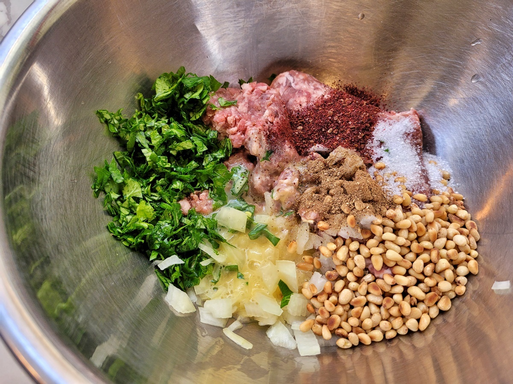
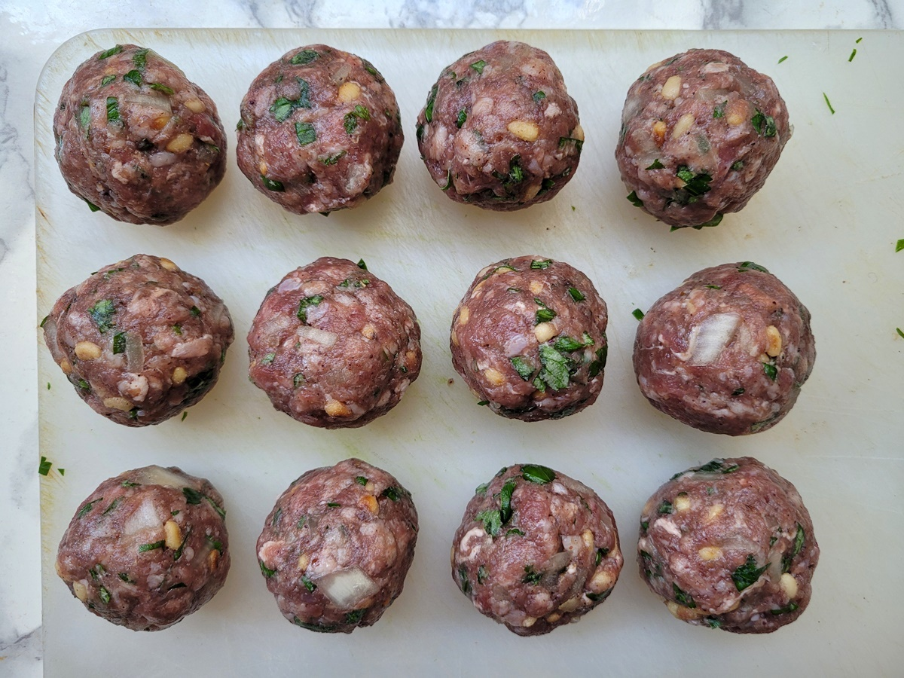
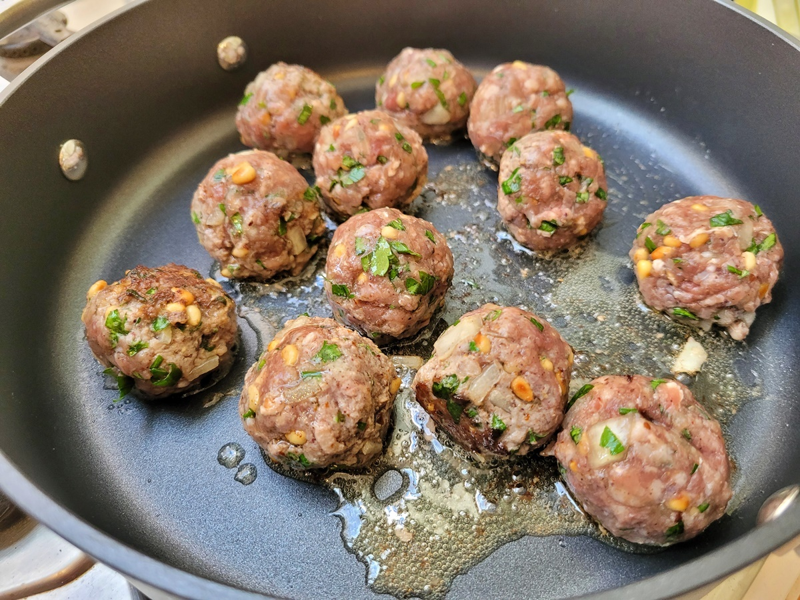
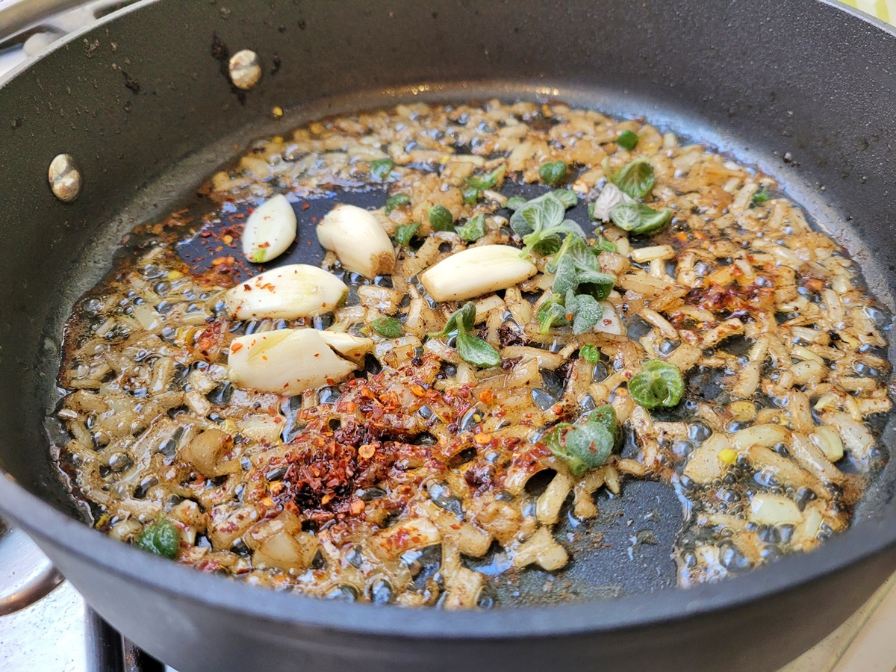
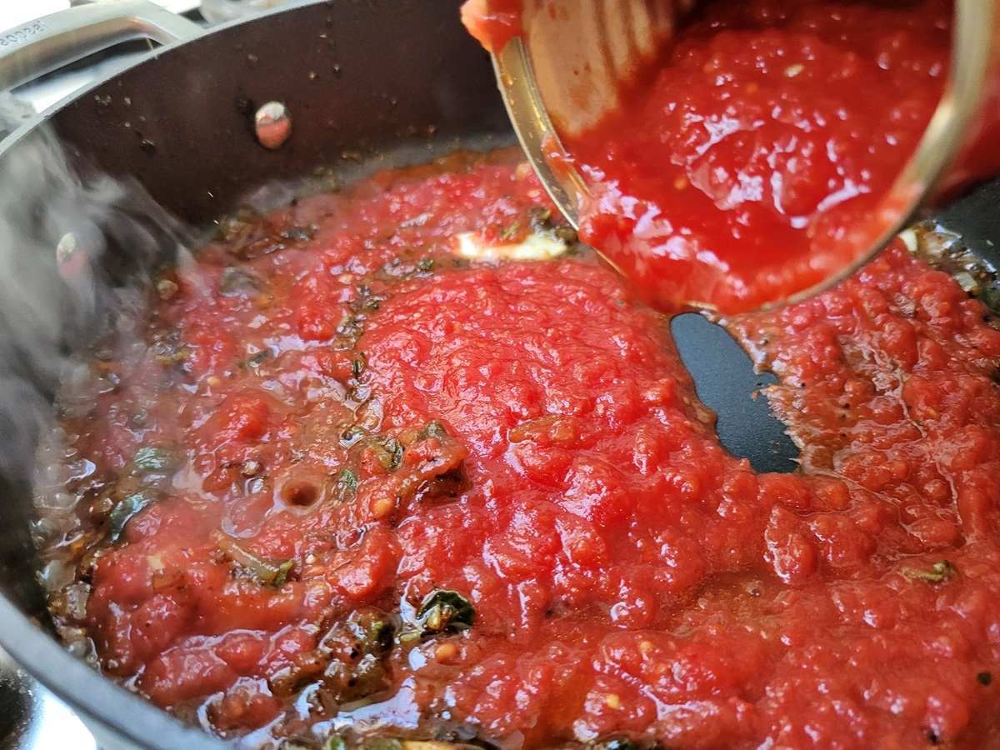
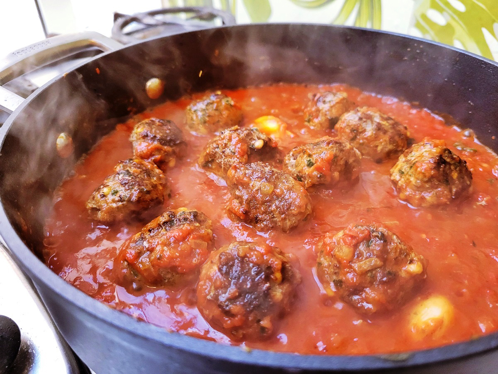

Cafe "Janis"

SASTĀVDAĻA
- 1/2 burciņa Spilva tomātu mērces
- 250 g spageti
- 1 daiviņa/s ķiploka
- 300 g liellopu māltās gaļas
- 3 ēd. k. miltu
SOLI PA SOLIM GATAVOŠANAS RECEPTE
1 SOLIS
Vispirms smalki sakapā abus sīpolus, bet pusi noliec malā. Bļodā liec malto gaļu, pievieno sīpolus, smalki sakapātu ķiploku, olu, garšvielas, rīvmaizi, un visu rūpīgi sajauc kopā ar rokām.
2 SOLIS
No masas izveido aptuveni vienāda izmēra bumbiņas. To viegli darīt ar samitrinātām rokām. Izkārto bumbiņas uz dēlīša un atstāj malā, līdz būs gatava mērce.
3 SOLIS
Sakarsē pannu ar eļļu, apcep sīpolus uz lēnas uguns, līdz tie kļuvuši caurspīdīgi. Pievieno mazos gabaliņos sagrieztu papriku un minūti pacep.
4 SOLIS
Pievieno konservētos tomātus un atstāj sautēties zem vāka, ieliekot lauru lapu. Pēc laika pievieno cukuru, garšvielas un ļauj sautēties vēl trīs minūtes.
5 SOLIS
Mērcei pa vidu izkārto gaļas bumbiņas, uzliec vāku un sautē uz lēnas uguns desmit minūtes. Pēc laika apgriez bumbiņas otrādi, izņem lauru lapu un gatavo tikpat ilgi.
6 SOLIS
Ēdiens būs ātrāk gatavs, ja mērci ar bumbiņām ieliksi kādā traukā, pārsegsi ar foliju un gatavosi cepeškrāsnī aptuveni 20 minūtes (180 grādos).